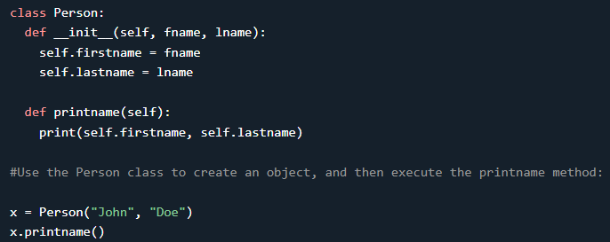

Inheritance allows us to define a class that inherits all the methods and properties from another class.
Parent class(super class) is the class being inherited from, also called base class.
Child class is the class that inherits from another class, also called derived class.
syntax:
class DerivedClassName(BaseClassName):
Create a Parent Class
Any class can be a parent class, so the syntax is the same as creating any other class:

Create a Child Class
To create a class that inherits the functionality from another class, send the parent class as a parameter when creating the child class:


Adding the __init__() Function
When you add the __init__() function, the child class will no longer inherit the parent's __init__() function.

Note: The child's __init__() function overrides the inheritance of the parent's __init__() function
To keep the inheritance of the parent's __init__() function, add a call to the parent's __init__() function

The super() Function
Python also has a super() function that will make the child class inherit all the methods and properties from its parent:

By using the super() function, you do not have to use the name of the parent element, it will automatically inherit the methods and properties from its parent.
The rest of the things are same as normal Classes.
Note:
Python has two built-in functions that work with inheritance
.
to check class inheritance: issubclass(bool, int) is True since bool is a subclass of int. However, issubclass(float, int) is False since float is not a subclass of int.
Python supports a form of multiple inheritance as well.
syntax:
class DerivedClassName(Base1, Base2, Base3):
In the simplest cases, you can think of the search for attributes inherited from a parent class as depth-first, left-to-right, not searching twice in the same class where there is an overlap in the hierarchy. Thus, if an attribute is not found in
DerivedClassName, it is searched for in
Base1, then (recursively) in the base classes of
Base1, and if it was not found there, it was searched for in
Base2, and so on.